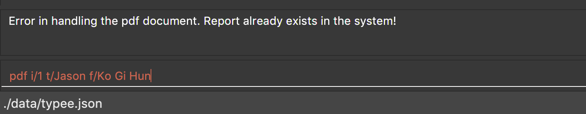

By: SC09-F14-3 Since: Aug 2019 Licence: MIT
- 1. Introduction
- 2. Quick Start
- 3. Features
- 3.1. Interactive Parsing
- 3.2. Switch to different windows:
tab - 3.3. Adding an engagement:
add - 3.4. Listing all engagements :
list - 3.5. Sorting all engagements :
sort - 3.6. Locating engagements by attendee, description, location and priority:
find - 3.7. Deleting an engagement :
delete - 3.8. Clearing all entries :
clear - 3.9. Undoing the previous command :
undo - 3.10. Redoing the previous command :
redo - 3.11. Displaying the list of engagements for a specified date (calendar view only):
calendar c/opendisplay - 3.12. Closing a displayed list of engagements for a specified date (calendar view only):
calendar c/closedisplay - 3.13. Changing the calendar display to the next month (calendar view only):
calendar c/nextmonth - 3.14. Changing the calendar display to the previous month (calendar view only):
calendar c/previousmonth - 3.15. Typing game :
tab b/game - 3.16. Generating a PDF file of engagement :
pdf - 3.17. Help window :
help - 3.18. Exiting the program :
exit - 3.19. Saving and loading the data
- 4. FAQ
- 5. Command Summary
1. Introduction
Typee is a Command Line Interface (CLI) application for managing engagements such as appointments, interviews and meetings. It is designed for secretaries and receptionists who prefer to work with a CLI while still enjoying the benefits of a Graphical User Interface (GUI). Head over to Section 2, “Quick Start” to see how to get the application running!
2. Quick Start
-
Ensure you have Java
11or above installed in your Computer. -
Download the latest
typee.jar. -
Copy the file to the folder that you want to use as the home folder for your Typee application.
-
Enter the command
java -jar typee.jaron your terminal to start the app. The GUI should appear in a few seconds. -
Type a command in the text box and press
Enterto execute it.
-
Type the command in the command box and press Enter to execute it.
e.g. typinghelpand pressing Enter will open the help window. -
Some example commands you can try:
-
list: Lists all engagements. -
tabb/game: Switches main window to start window of the game. -
addt/appointment s/09/11/2019/1200 e/09/11/2019/1330 l/NUS d/Meeting on Monday a/Ben|Tom p/HIGH:
Adds an engagement to the engagements list with the following details:
Engagement type: Appointment
Start time: 09/11/2019 at 1200 hours
End time: 09/11/2019 at 1330 hours
Location: NUS
Description: Meeting on Monday
Attendees: Ben and Tom
Priority: High -
pdfi/1 t/Jason f/Harry: Generates a document of the selected engagement of index 1, by setting the sender asHarryand receiver of the document asJason. -
deletei/3: Deletes the 3rd appointment shown in the current list. -
exit: Exits the app.
-
-
Refer to Section 3, “Features” for details of each command.
3. Features
3.1. Interactive Parsing
3.1.1. About
Typically, engagement managing software require users to enter the entire command in one shot.
For example, a user that wishes to add a meeting must type out the following: -
add t/meeting s/16/11/2019/1500 e/16/11/2019/1600 l/Meeting Room 2 d/Team Meeting a/John | Smith p/High
This can prove to be rather tedious and cumbersome as users must remember every detail of a command.
Typee overcomes this by allowing users to interact with its interface and build commands sequentially. Users just need to type the relevant command word to get prompted about subsequent inputs.

With interactive parsing, the aforementioned 'Add' command reduces to the following sequence of inputs: -
add
t/meeting
s/16/11/2019/1500
e/16/11/2019/1600
l/Meeting Room 2
d/Team Meeting
a/John | Smith
p/High
addExperienced users that have a grasp of the structure and format of various commands can also benefit from this feature. Interactive parsing allows multiple arguments to be input simultaneously, as long as the entered arguments adhere to a set of rules detailed in a later subsection.
The same 'Add' command can be constructed this way by a fairly experienced user: -
add t/meeting
s/16/11/2019/1500 e/16/11/2019/1600 l/Meeting Room 2
d/Team Meeting
a/John | Smith p/High
add.
Finally, a highly experienced user can create an 'Add' command in the conventional manner, i.e. by typing out
the entire command at once. This is identical to the format introduced in the beginning of this section: -
add t/meeting s/16/11/2019/1500 e/16/11/2019/1600 l/Meeting Room 2 d/Team Meeting a/John | Smith p/High
3.1.2. Supported Commands
All commands are parsed and built interactively. Each command, however, adheres to its own structure. Individual commands' structures and idiosyncrasies are detailed in the sections belonging to the respective commands.
In general, commands are of two types - static and dynamic.
At any point of time, the user can enter // current to view the current input constraints and
input // clear to stop parsing the current command. These are examples of dynamic commands.
Static commands are executed one at a time, whereas dynamic commands can be built at any point of time, even while parsing an ongoing static command.
Examples:
'Add' and 'Delete' are static commands. The following input sequence is invalid: -
add t/meeting
delete'Help' and 'Exit' are dynamic commands. Therefore, the following input sequence is valid: -
add t/meeting
help
s/11/01/2019/1500
exit
Calling another dynamic command in the midst of building a Tab command will erase the details of the command preceding
'Tab'. This happens if the command preceding Tab isn’t fully built.For example: add t/meeting tab // current b/calendar will erase the information of the add command.
|
3.1.3. Valid Input Sequences
Valid input sequences can be one of three types.
-
One argument per input -
addt/meeting…p/high -
Entire command in an input -
add t/meeting s/11/01/2019/1600 … p/High -
More than one argument, but not the entire command in an input -
add t/meetings/11/01/2019/1600 e/11/01/2019/1700…
After the last argument is specified, the required command is built and executed, carrying out the operation intended by the user.
The order of arguments entered is important. Consider the 'Add' command. The ideal ordering is as follows: -
add t/ s/ e/ l/ d/ a/ p/
When users resort to any of the three aforementioned forms of supplying arguments, they are required to conform to the specified ordering.
When the arguments aren’t in order, then the input is parsed as far as possible, in the expected order of the arguments.
For example, add t/meeting l/Meeting Room 2 is parsed till the argument for t/. The parameter location is deemed
invalid and the user is prompted to enter a start date-time.
This happens because the parser expects an argument for s/, but there is no such argument.
As a consequence, all arguments that are supposed to be entered after s/ (like l/) are not parsed.
add t/meeting l/Meeting Room 2.Similarly, add t/meeting s/15/01/2019/1500 d/desc p/low is parsed till s/ and a prompt is raised to enter a valid end date-time, leaving d/
and p/ untouched.

add t/meeting s/15/01/2019/1500 d/desc p/low.|
There lies a quirk with respect to the ordering of inputs if the parser has sufficient arguments. Consider the case when the user inputs add t/meeting e/15/11/2019/1500 s/15/11/2019/1400. This input is deemed valid even
though e/ and s/ are flipped. This is because after 't/', the parser expects to find an s/, which is in-turn contained in the input.
|
Thus, to summarize, the parser continues parsing in the order of the expected arguments, as long as the corresponding prefixes are found in the input.
3.1.4. Erroneous Inputs
Erroneous inputs occur in three mutually exclusive categories.
-
Inputs with invalid arguments
-
Inputs with multiple arguments for the same parameter.
-
Inputs with valid arguments, but irrelevant additional arguments.
An example of the first case is as follows: add t/teeming. "Teeming" is an invalid engagement type. Typee flags this inaccuracy
and prompts the user to enter an acceptable engagement type instead. Since Typee has already begun building an 'Add' command,
the subsequent input must begin with t/…

Attempting to replace the argument for a parameter or supply different arguments to the same parameter will result in Typee rejecting the user input.
For example, the input add t/meeting t/interview will be rejected.
The following sequence will also be rejected since it attempts to overwrite an argument.
add
t/meeting
s/15/11/2019/1500
t/interviewLast but not least, Typee will reject cases wherein the user supplies excessive and irrelevant arguments.
add t/meeting s/16/11/2019/1600 e/16/11/2019/1700 l/COM-1 d/Meeting a/Damith p/High o/High will be rejected because o/
is not a parameter for the 'Add' command.
3.2. Switch to different windows: tab
Switches to a different menu in the application window.
Format: tab b/MENU_NAME
-
Typee has four major features/menus. They comprise of:
-
Engagements List
-
Typing Game
-
Calendar View
-
Report Generator
-
Users can switch between respective windows in order to make full use of the application.
Engagement window is set to default window upon starting the application.
|
If user wants to switch to different windows, simply enter the tab command. Tab names can be seen on the top of the application display in green boxes.
For example, user enters tab b/calendar
, which the system will switch to calendar view window with a result display message set to "Switched to window: Calendar". Refer to the screenshot below.
| Users who prefer using mouse over typing can alternatively click the green tabs on the top to switch to different menu windows. |

Users can start building a command in one tab, switch tabs midway and finish building the command in another tab. This can be achieved by the following sequence of inputs.
add
t/meeting s/15/11/2019/1600 e/15/11/2019/1700
tab
b/calendar
l/COM-1 d/Meeting a/Damith p/High3.3. Adding an engagement: add
Adds an engagement to the system. There are three types of engagements; Appointment, Meeting and Interview
Format: add t/ENGAGEMENT_TYPE s/START_TIME[dd/mm/YYYY/HHMM] e/END_TIME[dd/mm/YYYY/HHMM] l/LOCATION d/DESCRIPTION a/ATTENDEES[Separated by '|'] p/PRIORITY
Examples:
-
add t/Meeting s/18/10/2019/1500 e/18/10/2019/1800 l/COM-2-B1-03 d/CS2103T Discussion a/John | Elijah | Sam p/High
Adds an engagement with following information;-
Engagement Type: Meeting
-
Start Time: 18/10/2019/1500
-
End Time: 18/10/2019/1800
-
Location: COM-2-B1-03
-
Engagement Description: CS2103T Discussion
-
Attendees: John, Elijah, Sam
-
Priority: High
-
After user enters the above command, Typee will store the information and append it to the displayed list of engagements.
|
The arguments to this command can be entered sequentially, leveraging the interaction offered by Typee. Example: add t/meeting s/11/11/2019/1500 … p/High
|
The table below summarizes the parameters of the add command.
| Parameter | Prefix | Constraints |
|---|---|---|
Engagement type |
|
Engagements must be one of 'meeting', 'appointment' or 'interview'. |
Start Date-Time |
|
This is when the engagement to be added begins. |
End Date-Time |
|
This is when the engagement to be added ends. |
Location |
|
The location of the engagement. The location must be non-empty. |
Description |
|
A brief description of what the engagement is about. The description must be non-empty. |
Attendees |
|
The list of people who will be present at the engagement. Individuals must be separated by a vertical line. |
Priority |
|
Priority level of the engagement. The priority level can be one of 'Low', 'Medium', 'High' or 'None'. |
If the engagement to be added clashes with an existing one, the user will be notified of the add command’s rejection.
An engagement clashes with another engagement if all of the below conditions are satisfied:
-
There is an overlap in the time-slot occupied by the engagements.
-
The engagements are held at the same location
| The list of attendees does not represent unique people. This is why attendees aren’t considered in engagement conflict resolution. |
3.4. Listing all engagements : list
Lists all engagements.
Format: list
This command is useful in retrieving the original engagement list after executing commands that modify the viewed list, like find.
This command can be executed in any tab but its results will only be shown in the engagements tab.
3.5. Sorting all engagements : sort
Sorts the list of all engagements in the engagement list by the order specified by user.
Format: sort p/PROPERTY o/ORDER
Properties supported: start (Start time), end (End time), priority and descriptionOrders supported: ascending and descending.
|
Examples:
-
sort
p/start
o/ascending
Sorts the list displayed in ascending order of start time.
sortp/starto/ascending
sort command can be done in one shot by giving all attributes at once. e.g. figure below shows the execution of sort p/start o/ascending.
|
After sorting, commands that require INDEX as an input field (e.g. delete) will take in INDEX with regards to the new list displayed. e.g. delete i/1 will delete the current first engagement displayed.
|
3.6. Locating engagements by attendee, description, location and priority: find
Finds engagements whose names contain any of the given keywords. Engagements can be in different types: Appointment, Meeting and Interview.
Searches can be interactive or non-interactive.
Format: find TAG/KEYWORD
Valid tags: d/, l/, a/, p/
With interactive parsing, the find command reduces to the following sequence of inputs:
find
d/Singapore based a/HansThe non-interactive equivalent of this sequence is find d/Singapore based a/Hans.
find
l/Com BasementThe non-interactive equivalent of this sequence is find l/Com Basement.
| Search parameter | Tag | Notes |
|---|---|---|
Description |
|
Engagements containing description keyword will be returned. e.g. |
Location |
|
Only exact full words will be matched e.g. |
Attendees |
|
Engagements containing attendee keyword will be returned. e.g. |
Priority |
|
Finds engagements according to priority. e.g. |
3.7. Deleting an engagement : delete
Deletes the specified engagement from the engagement list.
Format: delete i/INDEX
Examples:
list
delete i/2Deletes the 2nd engagement in the engagement manager.
find p/Low
delete i/1Deletes the 1st engagement in the results of the find command.
3.8. Clearing all entries : clear
Clears all engagements from the engagement manager.
Format: clear
3.9. Undoing the previous command : undo
Undoes the previous command, provided that it exists.
Format: undo
Undo supports the following commands that modify the engagement list: add, delete and clear.
|
Examples:
-
add t/Meeting s/18/10/2019/1500 e/18/10/2019/1800 l/COM-2-B1-03 a/John, Elijah, Sam d/CS2103T Discussion p/High
undo
Undoes the add command, i.e. the engagement with the descriptionCS2103T Discussionwill no longer be in the appointment manager. -
delete i/1
undo
Undoes the delete command, i.e. restores the first engagement in the original displayed list.

delete i/1

undo3.10. Redoing the previous command : redo
Redoes the previous undo command. There must be a valid undo command to redo, otherwise this command does nothing.
Format: redo
Examples:
-
delete i/1
undo(reverts thedelete i/1command)
redo(reapplies thedelete i/1command)
Redoes the previous undo command, i.e. the engagement deleted before undo will be removed again from the engagement manager.
undoredo3.11. Displaying the list of engagements for a specified date (calendar view only): calendar c/opendisplay
Opens a separate window displaying the list of engagements for the specified date. Only one such window is allowed per date. Nothing will happen if this command is used with a date which already has an open engagements list window.
Format: calendar c/opendisplay d/[date]. The date must follow a DD/MM/YYYY format. The range of allowable years is 0001 to 9999.
If a date from another month is used to open an engagement list window, the calendar view will switch to display that specified month. This command can be used to quickly switch to another month which is not immediately before or after the currently displayed month.
All engagement list windows will be closed if something is done to change the displayed calendar month
(e.g. using the calendar c/nextmonth command). This includes using this command as mentioned in the above paragraph.
Example: The calendar is currently displaying information for November 2019 and there are engagement list windows open for three dates
in the display. If calendar c/opendisplay d/11/12/2019 is entered into the input box, all three engagement list windows will be closed.
The calendar’s display then switches to December 2019 and the engagement list window for 11 December 2019 opens up.
This command does not work if the application is in another tab or the specified date is invalid.

The above calendar window opens up after entering calendar c/opendisplay d/29/10/2019 into the input box while in the
calendar view for November 2019. This does not change the display to October 2019 because 29/10/2019 is displayed in
the calendar view for November 2019, albeit at the top left corner.
Alternatively, you may click on any of the individual cells within the calendar window grid to open the engagement list for that date.
3.12. Closing a displayed list of engagements for a specified date (calendar view only): calendar c/closedisplay
Closes the open engagements list window for the specified date. This command does not work if the application if in another tab, the specified date is invalid, or there is no open engagements list window for the specified date.
Format: calendar c/closedisplay d/[date]. The date must follow a DD/MM/YYYY format. The range of allowable years is 0001 to 9999.
3.13. Changing the calendar display to the next month (calendar view only): calendar c/nextmonth
Changes the calendar view to the month following the currently displayed one. This command does not work if the application is in another tab or if attempting to go above the maximum allowable year of 9999.
Format: calendar c/nextmonth

nextmonth commandAlternatively, you may click on the blue button with the right arrow next to the calendar’s month title to change the display to the next month. The button will not work if the calendar is displaying December 9999.
This command closes any open engagement windows from the current month before updating the display to the next month.
3.14. Changing the calendar display to the previous month (calendar view only): calendar c/previousmonth
Changes the calendar view to the month prior to the currently displayed one. This command does not work if the application is in another tab or if attempting to go below the minimum allowable year of 0001.
Format: calendar c/previousmonth
previousmonth commandAlternatively, you may click on the blue button with the left arrow next to the calendar’s month title to change the display to the previous month. The button will not work if the calendar is displaying January 0001.
This command closes any open engagement windows from the current month before updating the display to the previous month.
3.15. Typing game : tab b/game
Changes the current window to the TypingGame window which has a Start button.
Click the Start button to open the game in a new window.
There are moving words that you can type in order to score points. Once you correctly type the specified word, the word disappears and the increase in points is reflected in the player information panel in the game window.

| Press SPACEBAR or Enter to clear the text area which is located at the bottom of the screen. |
When you fail to type the word before the moving word reaches the bottom of screen, the decrease in health points is reflected in the player information panel in the game window.
| As the game progresses, the words move faster, hence increasing difficulty such that you can improve your typing speed. |
| Closing the game midway would result in loss of in-game progress. |
After the health points reaches zero, GAME OVER is displayed as shown below.
Once the game is over, you can manually close the application by clicking the x on the top right hand corner of the window. If you want to play the game again, click the Start button shown in the Start window.
3.16. Generating a PDF file of engagement : pdf
3.16.1. Usage
Pdf Command allows user to create a document of selected engagement in a given format of document template.
Document template can be customised based on the customers’s requirements, however, default document format will be in an email format,
where the user can set who the user is going to send this document to inform an engagement.
Format: pdf i/LIST_INDEX f/FROM t/RECEIVER
For example, if the user wants to create a document of an engagement, which has a list index of 1, which can by observed in engagement window.
User sets the sender as John, which is the user’s name, and sets receiver as Harry. Hence, user enters pdf i/1 f/John t/Harry to generate the document.
|
User can generate multiple report documents with the same engagement, but with different SENDER and RECEIVER names. System will not allow generating documents that already exists in the directory. |
Once user enters the command, system will automatically open the generated document and display the command result in the output panel, showing "Engagement Report successfully generated."
| User can alternatively click the green refresh button on top right of the documents explorer to refresh the documents directory. |

Do not manually modify the document file name in the reports/ directory as it might cause system failure in recognising the documents.
|

User can also double click the list item in the documents explorer tree view to open the document file on their local computer file system. Below is the sample of generated document from the system.
Deleting Documents
Instead of directing the actual directory in the local system, user can simply click the red x button, next to the refresh
button to delete the selected document list item. Once system displays the popup message to confirm the user’s decision, user will click the OK button to confirm deletion.
Delete function will only available when user has pre-selected the document list item and the selected item must be a .pdf form, not directory. Below is the screenshot after user clicks the delete button.

Now, once system successfully deleted the selected document, system will display the status message above the documents explorer. Below is the screenshot of the system status message after deletion.
PDF generation and deletion operations cannot be undone via undo command.
|
3.16.2. Error Handling
-
Documents Explorer in Report Window only displays files with .pdf format in reports/ directory. Files with different format will not be displayed in the explorer.
Figure 34. duplicate file exception message displayed in status text field. -
System will not allow user to delete directories in the documents explorer tree view.
-
System will throw an exception message in the status field if user locks the document.
 Figure 35. file deletion exception message displayed in the status text field.
Figure 35. file deletion exception message displayed in the status text field.
3.17. Help window : help
Format: help
The user can type help in the input text area to open up a help window. It displays a basic command summary and a link to
the user guide, which has more detailed information about using Typee.
3.18. Exiting the program : exit
Exits the program.
Format: exit
3.19. Saving and loading the data
The appointment manager’s data is saved in the hard disk automatically after any command that changes the data.
There is no need to save manually. Relevant data will be loaded from the external file when the application starts.
4. FAQ
Q: How do I transfer my data to another Computer?
A: Install the app in the other computer and overwrite the empty data file it creates with the file that contains the data of your previous Typee folder.
5. Command Summary
-
Add
add t/ENGAGEMENT_TYPE s/START_TIME[dd/mm/YYYY/HHMM] e/END_TIME[dd/mm/YYYY/HHMM] l/LOCATION d/DESCRIPTION a/ATTENDEES p/PRIORITY
e.g.add t/Meeting s/18/10/2019/1500 e/18/10/2019/1800 l/COM-2-B1-03 d/CS2103T Discussion a/John | Elijah | Sam p/HIGH -
Tab:
tab b/MENU_NAME-
Add Engagement :
tab b/engagement -
Calendar :
tab b/calendar -
Game :
tab b/game -
Report :
tab b/report
-
-
Calendar :
calendar c/CALENDAR_COMMAND-
Open Display :
calendar c/opendisplay d/DATE
e.g.calendar c/opendisplay d/11/11/2019 -
Close Display :
calendar c/closedisplay d/DATE
e.g.calendar c/closedisplay d/11/11/2019 -
Next Month :
calendar c/nextmonth -
Previous Month :
calendar c/previousmonth
-
-
Clear :
clear -
Delete :
delete i/INDEX
e.g.delete i/3 -
PDF :
pdf i/INDEX to/RECEIVER from/SENDER -
Redo :
redo -
Sort :
sort p/PROPERTY o/ORDER -
Undo :
undo -
List :
list -
Help :
help